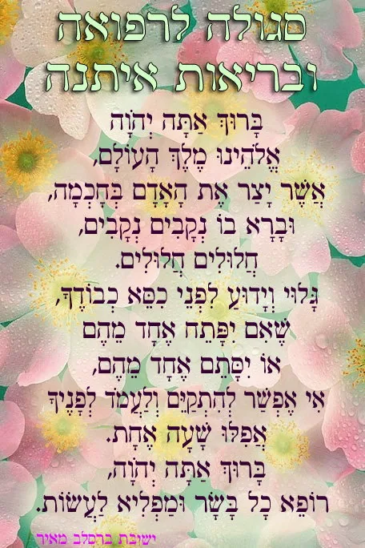
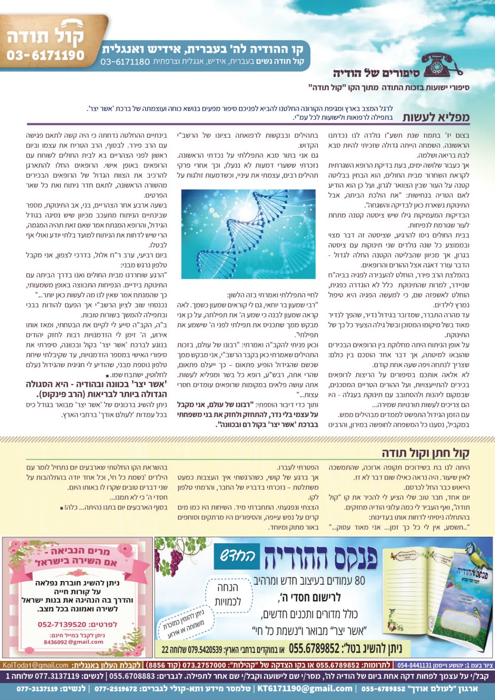
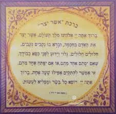

עלון נפלא על כוחה של ברכת אשר יצר - אשר יצר עלון.pdf
סיפור נפלא על כוחה של אשר יצר שהופיע בעלון קול תודה
ניתן לשמוע את הסיפור מבעל המעשה - בלחיצה כאן.
וכאן הרב אשר קובלסקי מספר את הסיפור כפי ששמעו מבעל המעשה.
לחץ כאן לקרוא את הסיפור בעלון של הרב קובלסקי

הצלה מהמגיפה בזכות אשר יצר. גליון מפניני פרשת השבוע
ה'דברי חיים' מצאנז זיע"א – אשר יצר מועיל יותר "ונתנה תוקף"!"
יהודי אחד שהיה גר בגרמניה סיפר שכאשר היה ילד חשקה נפשו לנסוע לצאנז לראות את האדמו"ר הגדול ה"דברי חיים" מצאנז. אביו הסכים, ונתן לו כסף לנסיעה בתנאי שלא ייסע ליותר מיום אחד.
הילד הגיע לצאנז ורצה להיכנס לאדמו"ר, אבל אמרו לו שבאותו יום הרבי אינו מקבל קהל כלל. הוא החליט לעמוד מאחורי דלת חדרו של הרבי ולעקוב אחרי הנהגותיו, וכך הוא מספר:
"עמדתי מאחורי הדלת ושמעתי את הרבי מברך ברכת "אשר יצר". הברכה ארכה כעשרים דקות, בהתלהבות נרגשת ובדבקות מרוממת שאי אפשר לתאר בכתב. רק כדי לשמוע "אשר יצר" כזה היה כדאי לנסוע את כל הדרך הארוכה.
לאחר שגמר את הברכה, פתח הרבי את הדלת וראה אותי. הוא פנה אלי ואמר, "בני! יש ליזהר לכוון ב"אשר יצר" יותר מאשר ב"נתנה תוקף" – תפלת "ונתנה תוקף" היא מנהג, וברכת אשר יצר היא מתקנת חז"ל.
דע לך, שברכת "אשר יצר" הנאמרת בכוונה בכוחה להביא יותר ישועות וברכות לעולם מ"ונתנה תוקף"!"

החזון איש זצ"ל
החזון איש היה מברך ברכת "אשר יצר" כל פעם בעמידה בפינה, בהפסקת כל פעולה; הוא לא הלך, לא נגב ידיו, רק עמד בפינה כאילו עומד בתפילת העמידה ובירך. הרב חיים ברים זצ"ל סיפר שכל פעם שהחזו"א בירך ברכת "אשר יצר" היה עומד ליד הקיר, כשפניו מוסבים אל הקיר, והתאמץ כל כך בברכתו עד שפניו נתאדמו מרוב התרגשות (מעשה איש ח"ד י"ד ספר מרבה חיים עמוד רפ"א).
ראו עליו את מה שכתב ב"חובת הלבבות" בביאורו, כיצד צריך לומר ברכת השבח להשם יתברך, שיפנה גופו מכל מעשי העולם הזה והעולם הבא, ויפנה ליבו מכל המחשבות המטרידות אותו וכו'.
וכן סיפר הרה"ג ר' אליעזר טורצ'ין, שהוא הבחין שכאשר ה"חזון איש" היה מברך ברכה היו רואים בו שמתאמץ כל כך עד שהיו בולטים לו הורידים מרוב מאמץ.